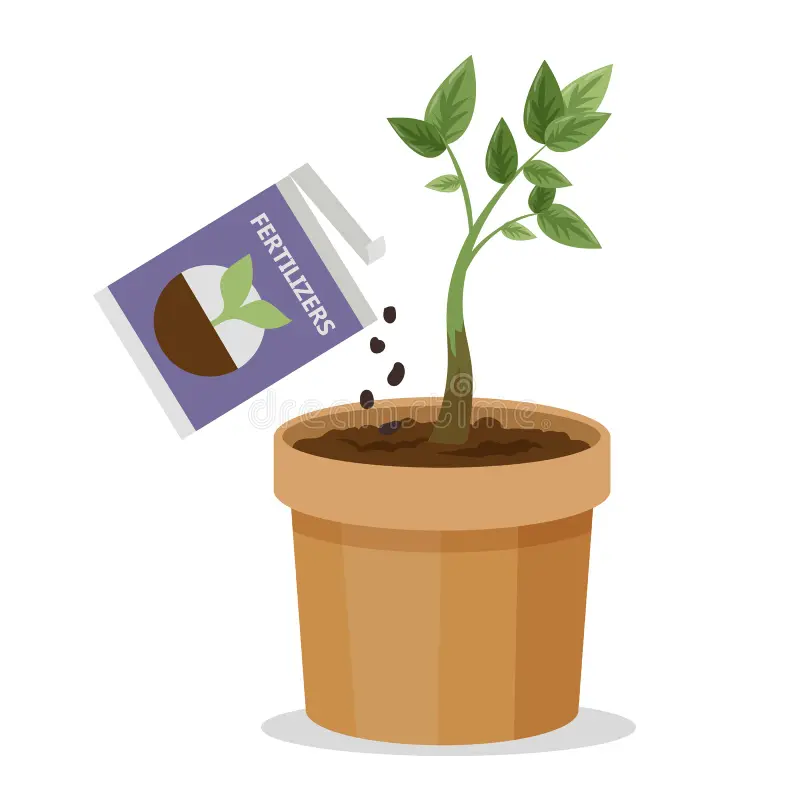

Fertilizer For Adenium
Adenium plants need a lot of nitrogen to flower, so you can apply a high-nitrogen fertilizer directly to the soil before each blooming period. Here are some fertilizer options for adenium plants:
- • Water-soluble, slow-release fertilizer
Use a 13-13-13 fertilizer once a month during the growing season.
- • Fertilizer diluted to half strength
Feed indoor adeniums every week during spring and summer using a water-soluble fertilizer diluted to half strength.
- • Half dose of a 20-20-20 plant food
Fertilize your desert rose during its growing period (spring and summer) with a half dose of a 20-20-20 plant food. Stop fertilizing during the winter when it goes dormant.
You can also try these fertilizer products for adenium plants:
- • Erwon Adenium Flower Booster: An organic fertilizer with charged micro-organism and micronutrients
- • Adenium Feed: A liquid fertilizer that helps with healthy green leaves, strong formation, balanced rooting, and beautiful flowers
- • Serbajadi Plant Food Adenium King 19 Fertiliser: Apply the fertilizer every 10 days or as required